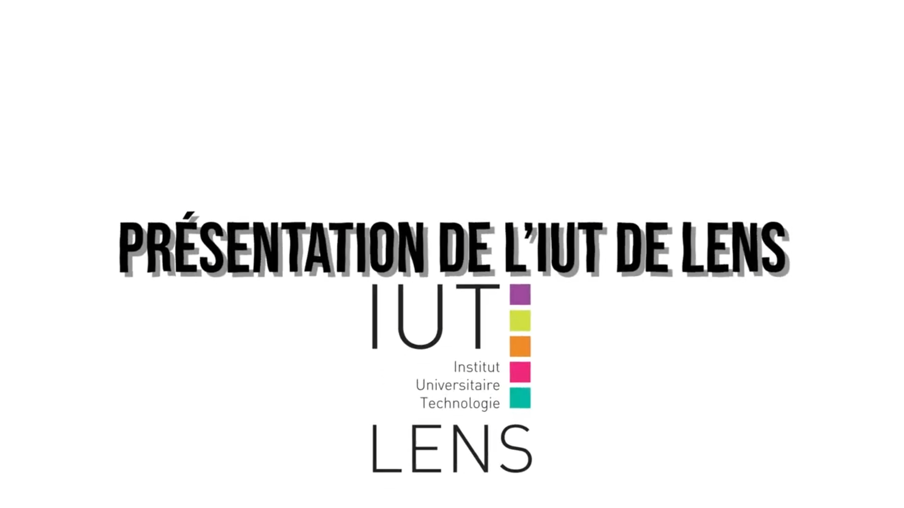

← Retour aux projets
Clip de présentation IUT

Le Projet
Ce projet consiste en la réalisation d'un clip vidéo promotionnel pour présenter mon IUT. L'objectif était de mettre en valeur la vie étudiantes et les infrastructures de l'établissement.
Approche Créative
J'ai cherché à capturer des moments authentiques et dynamiques pour retranscrire l'atmosphère de l'IUT.
Outils Utilisés
Logiciels: Adobe Premiere Pro, Adobe After Effects
Ressources
Accédez à la vidéo sur le Drive.
Voir le dossier Drive